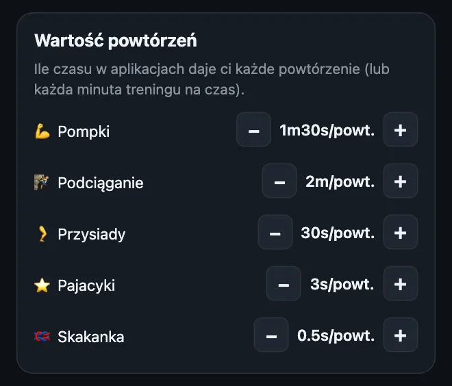

Ile czasu przed ekranem powinna być warta pompka?
Cześć wszystkim! W HonorFit każde zapisane powtórzenie kupuje czas w aplikacjach, a cenę ustalasz ty. To najczęstsze pytanie, jakie dostaję, kiedy ktoś już wszystko ustawi: ile powinna być warta pompka? Minuta? Dziesięć sekund? Oto jak ja o tym myślę.
Wartości domyślne
Jeśli niczego nie ruszysz, dostajesz to:
| Ćwiczenie | Domyślnie daje |
|---|---|
| 💪 Pompki | 1 minutę za powtórzenie |
| 🧗 Podciąganie | 1m30s za powtórzenie |
| 🔥 Brzuszki, 🦵 Przysiady | 30 sekund za powtórzenie |
| Każde ćwiczenie, które dodasz | 30 sekund za powtórzenie |
| Treningi na czas (spacer, joga, HIIT) | 30 sekund za minutę |
| Treningi na dystans | 5 minut za km albo 8 za milę |
| 👟 Kroki | 3 minuty za 1000 kroków |
Czyli 20 pompek to 20 minut Instagrama. Dla wielu osób na start to w sam raz. Dla innych to zdecydowanie za hojnie albo za skąpo. A ty do której grupy należysz?
Jak to wybrać w jednej linijce
Pomyśl o dwóch liczbach:
- Ile czasu w zablokowanych aplikacjach wydaje ci się OK w zwykły dzień? Szczerze, a nie życzeniowo.
- Ile powtórzeń naprawdę zrobiłbyś za ten czas, rozkładając je na cały dzień?
Potem podziel: wartość powtórzenia = czas ÷ powtórzenia. Chcesz godzinę TikToka za 60 pompek? 1 minuta za powtórzenie. Chcesz tę samą godzinę, ale dasz radę zrobić 120 przysiadów? 30 sekund za przysiad. I to naprawdę cała filozofia.
Jeśli odpowiedź na pytanie 2 brzmi „niewiele”, to też jest w porządku. Wyceń powtórzenia wysoko i ustaw Dzienną bazę (Ustawienia, za darmo), żeby każdy dzień zaczynać z jakimś czasem już w banku.
Kilka ustawień do skopiowania
| Ćwiczenie | Każde powtórzenie daje | Ile daje seria |
|---|---|---|
| Pompki (dla początkujących) | 1m30s | 10 pompek = 15 minut |
| Pompki (robisz to już od jakiegoś czasu) | 30 sekund | 40 pompek = 20 minut |
| Pajacyki | 3 sekundy | 100 pajacyków = 5 minut |
| Skakanka (za każdy skok) | 0,5 sekundy | 600 skoków = 5 minut |
| Podciąganie | 2 minuty | 5 podciągnięć = 10 minut |
| Bieganie (dystans) | 6 minut za km | 5 km = 30 minut |
Zasada: im łatwiejsze i szybsze powtórzenie, tym mniej powinno być warte. Pajacyk zajmuje około sekundy, więc nie powinien kupować tyle samo co podciągnięcie.
W 1.18.0 przyciski −/+ stały się dokładniejsze
Do niedawna najmniejszą wartością było 5 sekund, przez co bardzo szybkie powtórzenia (skakanka, pajacyki) trudno było sensownie wycenić, a przejście z 3 do 10 minut trwało wieki. Jeden z użytkowników napisał do mnie o obu tych rzeczach, więc w 1.18.0 przyciski −/+ przechodzą przez sprytniejszą drabinkę wartości:
- Poniżej 5 sekund: 4, 3, 2 i 1 sekunda, potem 0,5, 0,25 i 0,1 sekundy.
- Od 5 sekund do 1 minuty: co 5 sekund.
- Od 1 do 3 minut: co 15 sekund.
- Od 3 do 10 minut: co 30 sekund.
- Powyżej 10 minut: co 1 minutę.
Znajdziesz je w dwóch miejscach:
- Ustawienia → Wartość powtórzeń: jeden wiersz −/+ na każde ćwiczenie. Najszybciej, jeśli chcesz tylko poprawić cenę.
- Ustawienia → Ćwiczenia → Edytuj: pełny edytor, w którym możesz też dodawać ćwiczenia, zmieniać ich nazwy, usuwać je i przełączać między powtórzeniami, minutami i dystansem. Cały opis znajdziesz we wpisie jak dostosować ćwiczenia.

Sygnały, że cena jest zła
- Łapiesz się na zapisywaniu powtórzeń, których nie zrobiłeś. Twój czas jest za drogi. To system na słowo honoru coś ci mówi. Podnoś wartości o jeden stopień, aż przestanie cię kusić.
- Saldo nigdy się nie kończy. Twój czas jest za tani. Obniż wartości o jeden czy dwa stopnie albo zablokuj jeszcze jedną aplikację.
- Robisz powtórzenia, ale z niechęcią. Pewnie to złe ćwiczenie, a nie zła cena. Wymień je na coś, co nie budzi w tobie niechęci. Spacer się liczy. Łagodniejsze ćwiczenia też.
- Odkładasz całe godziny i przepalasz je wieczorem. Włącz Reset o północy (za darmo), żeby niewykorzystany czas się nie kumulował.
Daj każdemu nowemu ustawieniu mniej więcej tydzień, zanim znowu je zmienisz. Pierwsze dwa dni i tak są dziwne, bez względu na wszystko.
Tryb trudny i tryb chorobowy
Na dni, które nie pasują do twojego zwykłego ustawienia, jest przycisk 💀 Trudny, który możesz dodać u góry ekranu głównego (Ustawienia → Tryb trudny i chorobowy, za darmo). Stuknij go raz, a każde powtórzenie da połowę. Stuknij jeszcze raz, żeby włączyć 🤒 tryb chorobowy, w którym każde powtórzenie daje dwa razy więcej, na dni, kiedy źle się czujesz. Stuknij kolejny raz, żeby wrócić do normalnego trybu. Twoje właściwe wartości się nie zmieniają, więc nie ma czego cofać.
Nie jestem trenerem: robię aplikację, a nie plany treningowe. Jeśli ćwiczenie boli, przestań, a jeśli masz kontuzję albo problem zdrowotny, zapytaj kogoś, kto zna twoje ciało, co jest dla ciebie dobre. Potem ustaw HonorFit pod to.
HonorFit Blocker to darmowa blokada aplikacji na iPhone'a i Androida. Sam wybierasz ćwiczenia i to, ile są warte. Na słowo honoru, bez kamery, nic nie opuszcza twojego telefonu.